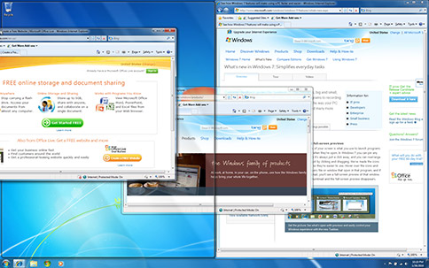

Fue creado para el mundo inalámbrico, que aparece a finales de la primera década del siglo XXI. A partir de ese momento, las ventas de ordenadores portátiles superan a las de ordenadores de escritorio y es usual conectarse a zonas interactivas inalámbricas públicas, como las redes privadas de los hogares o las cafeterías.
Windows 7, además, incluyó algunas características nuevas como mejoras en el reconocimiento de escritura a mano, soporte para discos virtuales, rendimiento mejorado en procesadores multinúcleo, etc.
Nuevas formas de trabajar con ventanas se incorporan a Windows 7. Todas ellas mejoraron el funcionamiento e hicieron que la interfaz sea más divertida de usar. Además fue significativo para Windows Touch, la tecnología táctil que perite a los usuarios navegar por Internet, abrir archivos y carpetas en pantallas táctiles o desplazarse por fotos.
Un dato importante es la importancia que dio Windows 7 a la mejora de su interfaz, para volver a más accesible al usuario y añadir nuevas características que lograran hacer tareas de forma más fácil y rápida, todo ello al mismo tiempo que se harían esfuerzos para conseguir un sistema más ligero, estable y rápido.

Escritorio de Windows 7
Ir a...
Inicio